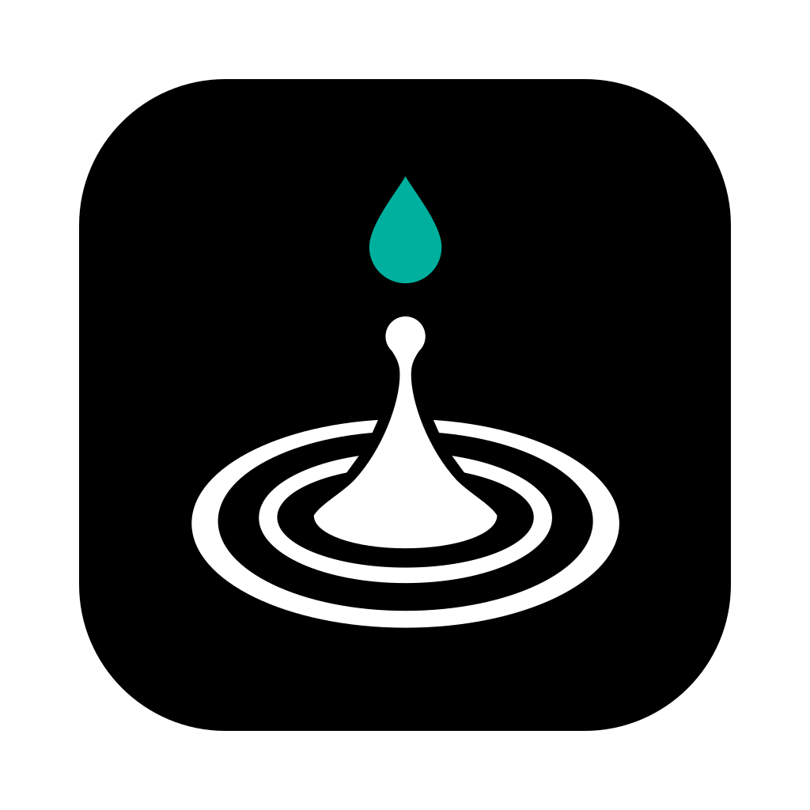

Libreria

Scegli una cartella di sample
ClusterSound analizza ricorsivamente tutti i file audio (wav, aif, flac, ogg, mp3),
li classifica (kick, snare, hat…) e li dispone in 3D per somiglianza.
I file originali non vengono mai modificati.
Non hai ancora sample?
Rapidi:
La cartella dei download è nella libreria: i file vengono analizzati in automatico.